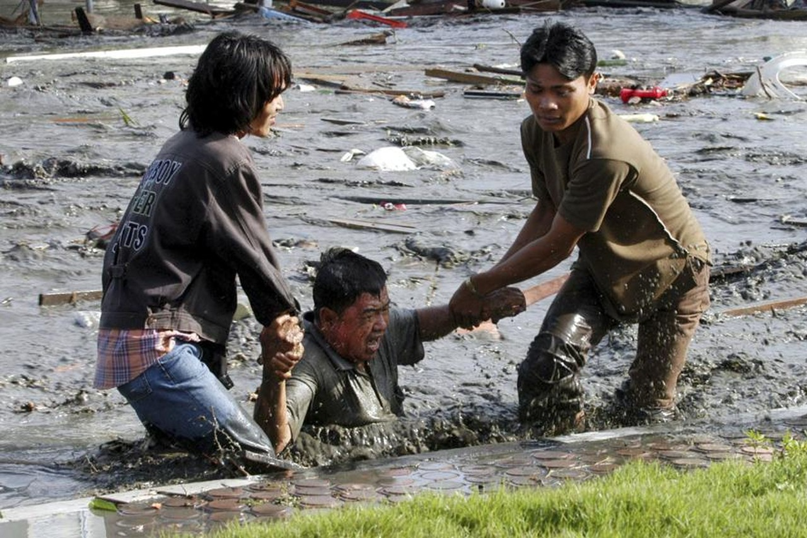

Op zondag 26 december 2004 vond een zeer zware zeebeving plaats in de Indische Oceaan, die een vloedgolf veroorzaakte die zich in verschillende richtingen over de Indische Oceaan verplaatste met ongeveer 230.000 doden als gevolg. De catastrofe wordt gezien als een van de ergste natuurrampen in de recente geschiedenis.
De aardbeving van Chili 2010 was een aardbeving met een momentmagnitude van MW = 8,8 in het Zuid-Amerikaanse
land Chili. De aardbeving vond plaats op 27 februari 2010 om 3:34 plaatselijke tijd (07:34 Belgische en
Nederlandse tijd). Het hypocentrum lag volgens de eerste berichten, voor de kust van Chili, op 115 kilometer
afstand van de stad Concepción en op zo'n 91 kilometer van de Chileense kust op een diepte van 35
kilometer.
In de Chileense hoofdstad Santiago, op 300 kilometer van het epicentrum, viel de stroom uit, zo meldde de
Amerikaanse nieuwszender CNN. Gebouwen werden er tien tot dertig seconden door elkaar geschud. De beving was
501 keer krachtiger dan de aardbeving in Haïti in januari 2010, die een kracht van MW = 7,0 had.
Op 11 april 2012 vond een zeer zware zeebeving plaats in de Indische Oceaan.
De zeebeving deed zich voor om op 11 april 2012 om 08:38:38 (UTC). De beving deed zich voor op een diepte van
33 kilometer. Het epicentrum lag ongeveer 430 kilometer van de kust van het Indonesische eiland Sumatra.
Vrijwel direct werd een tsunamiwaarschuwing afgegeven, voor de complete Indische Oceaan. In veel landen brak
op grote schaal paniek uit en de dreiging hield de wereld enkele uren in zijn greep, waarbij een herhaling
werd gevreesd van de verwoestende tsunami van 2004. Kustgebieden werden geëvacueerd op Sumatra, in Thailand,
Sri Lanka en India.
De waarschuwing werd zes uur later weer grotendeels ingetrokken. Omdat de beving horizontaal was, waarbij
aardschollen langs elkaar schuiven, kwam de zeebodem niet omhoog. Er zijn geen meldingen dat de beving
resulteerde in zware schade of dodelijke slachtoffers. Op het eiland Simeulue (voor de kust van Sumatra) werd
een kleine tsunami gerapporteerd van circa een meter hoog. Deze richtte geen schade aan. Door de aardbeving
zelf kwamen 5 mensen om het leven.
Op 26 december 2004 vond op ongeveer dezelfde locatie een beving plaats met een kracht van 9,1 op de schaal
van richter. Bij deze zeebeving vonden meer dan 230.000 mensen de dood..
De aardbeving in Sumatra op 28 maart 2005 vond plaats om 16:09:37 UTC (23:09:37 lokale tijd). Het epicentrum was gelokaliseerd op 2° 05′ 35″ N 97° 00′ 58″ O. Deze beving was een zeebeving en vond plaats op een diepte van ongeveer 30 kilometer in de Indische Oceaan ongeveer 200 km ten westen van Sumatra en ongeveer 1400 km ten noordwesten van Jakarta. Initiële gegevens duiden op een grootte van 8,7 op de momentmagnitudeschaal, met de beving voelbaar tot op 1000 km in Bangkok, Thailand. De beving was waarschijnlijk een nabeving van de zeebeving van 26 december 2004 die de regio teisterde. Ze duurde ongeveer 2 minuten. In tegenstelling tot de vorige had deze beving minder ernstige gevolgen omdat er geen tsunami is ontstaan. De bodem van de oceaan is veel minder in beweging gekomen en daardoor zijn er geen vloedgolven ontstaan. De beving resulteerde in een wijdverspreide stroomuitval in de Indonesische provincie Atjeh. Deze provincie had reeds zwaar te lijden onder de tsunami van 26 december 2004.
Ten westen van het Indonesische eiland Sumatra heeft zich 12-9-2007 een zware aardbeving voorgedaan met een kracht van 8,4 op de schaal van Richter. Het natuurgeweld leidde direct tot een reeks aan internationale waarschuwingen voor tsunami's